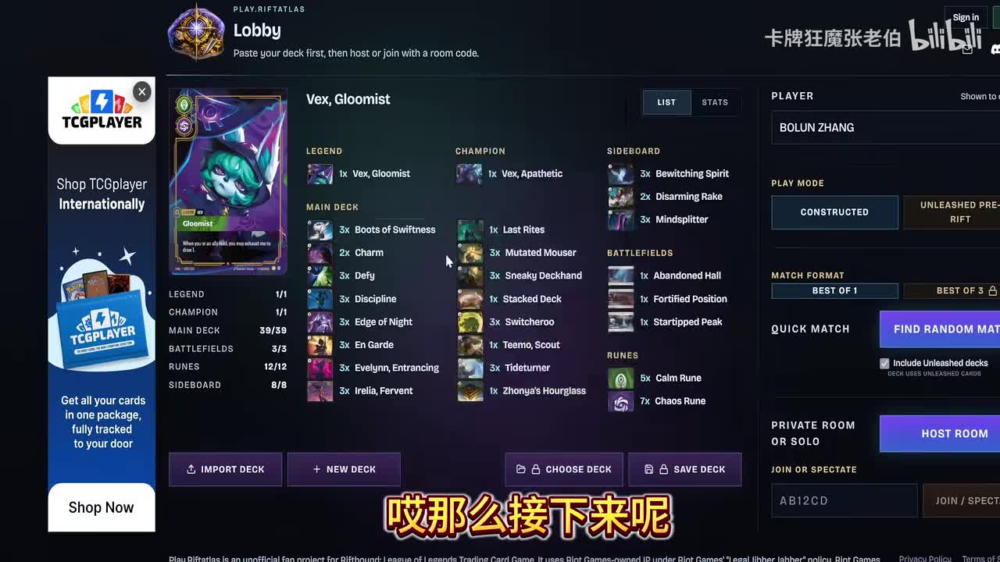
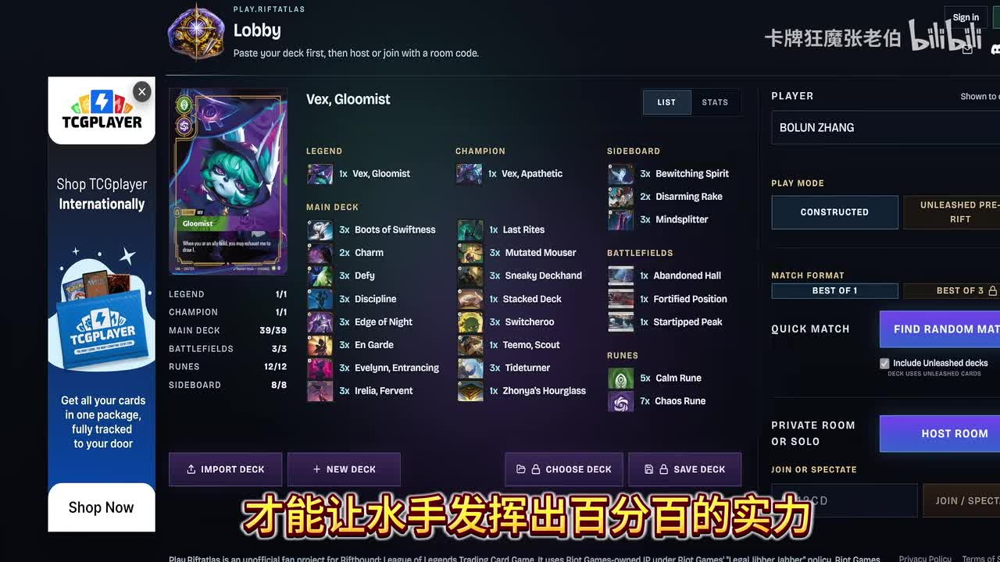
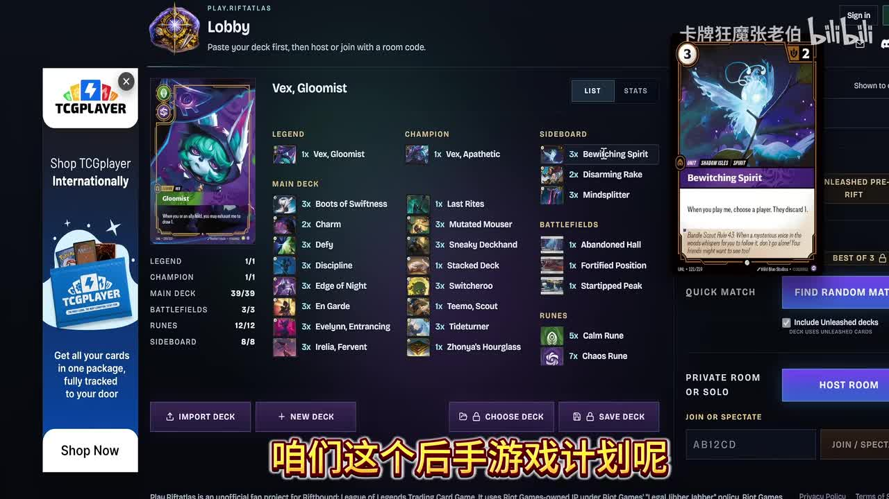

双面薇古丝不是双倍英雄
牌表同时带 Vex, Gloomist（薇古丝，愁云使者）与 Vex, Apathetic（薇古丝，冷眼旁观），但各 1 张。它更像两种局面工具，而不是围绕薇古丝堆满数量。
基于 B 站 P1 公开章节、画面和登录态 AI 字幕核对整理。这里不是逐字稿，而是把可确认的章节、牌表和讲解结构转成可复盘的详情页。
这期 P1 的主题不是单纯展示薇古丝强，而是解释一套“薇古丝 + 刀妹组件”的构筑为什么能打到 16 强：主轴靠刀妹体系给频率、保护和进攻压力，薇古丝提供另一套资源与控制角度，战场和备牌负责把后手局面补齐。
牌表同时带 Vex, Gloomist（薇古丝，愁云使者）与 Vex, Apathetic（薇古丝，冷眼旁观），但各 1 张。它更像两种局面工具，而不是围绕薇古丝堆满数量。
Irelia, Fervent（刀妹）、En Garde、Defy、Discipline、Edge of Night 等牌组成了进攻和保护骨架，负责把水手、变异猫咪和薇古丝的资源转成压力。
章节标题直接把后半段放在场地配合和备牌计划上，说明这套牌最需要解决的不是上限，而是不同对局里能否平稳进入自己的强回合。
废弃大厅让多单位、多法术的轮次更容易转成分数压力，是刀妹体系中最像“强回合开关”的战场。
Bewitching Spirit、Disarming Rake、Mindsplitter 都偏向针对对手关键手牌、装备或核心单位，目的在于让后手计划有明确突破点。
Zhonya's Hourglass（中娅沙漏）能保护堆装备的薇古丝或刀妹，也能防破败之咒、过载能量这类大型扫场；但它会拖慢聚首和抓牌节奏，所以只适合少数对局。
资料限制：B 站公开接口显示 P1 字幕列表为空，后续通过登录态拿到 AI 字幕用于核对口播信息。AI 字幕可能有误识别，所以本页仍按章节画面、可见牌表和可确认语义整理，不当作逐字稿。
公开视频返回了五个 P1 章节。这个页面的正文也按这五段展开：先交代问题，再看牌表选择，再看战场和备牌如何服务实战计划。

从画面可见，这套牌并没有把所有空间都让给薇古丝，而是用一套完整的刀妹式进攻组件包住薇古丝。它的结构更像“主节奏是刀妹，薇古丝提供另一条资源和控制路线”。
| 主牌定位 | 不是纯慢速薇古丝，也不是纯刀妹快攻。主牌用刀妹组件制造交换和保护窗口，再把薇古丝、Evelynn、Tidetumer 等牌转成持续资源。 |
| 符文结构 | 5 Calm + 7 Chaos 说明这套牌需要同时保留稳定防守和进攻爆发，不是只押单一速度。 |
| 单张工具 | Last Rites、Stacked Deck、Teemo, Scout、Zhonya's Hourglass（中娅沙漏）都是 1 张，说明它们更像局面解法或特定窗口工具，不是每局都要抽到的核心件。 |
| 中娅沙漏 | 视频在 14:14 左右专门补充：中娅沙漏能保住穿装备的薇古丝或刀妹，也能防破败之咒、过载能量这类大型扫场；但如果保下来以后没能聚首、没抓到牌，后续手牌会变干，所以它不是泛用保护。 |
| 中娅适用 | 明确提到的好用方向是“防一些扫场”和“保护穿一堆装备的薇古丝或刀妹”；17:43 左右还把中娅理解成额外的薇古丝资源，适合那些对手愿意用伏击或高代价去处理薇古丝的对局。 |
| 中娅不适用 | 视频没有点名“中娅打某某对局不好用”的完整名单，只强调它和薇古丝聚首抓牌思路不搭：如果这局重点是快速征服、聚首、抓牌，或者你保住单位也接不上聚首，中娅就容易让手牌变薄。 |
| 三张战场 | 废弃大厅、强化阵地、星尖峰覆盖爆发、站场和延展三种需求，让同一套主牌能在不同对局里切换姿态。 |
这段是本页最关键的依据。先把主牌、战场、符文和备牌看清楚，再理解后面为什么讨论场地和后手计划。
这套牌能成立，关键不在于“带了薇古丝所以强”，而在于它有一套完整的主动交换逻辑。刀妹组件让对手必须处理你的频率，薇古丝才有空间发挥控制和资源优势。
Sneaky Deckhand（水手）、Mutated Mouser、Irelia, Fervent（刀妹）、En Garde 这些牌让你不是被动等薇古丝启动，而是持续制造必须回应的攻击。
Defy、Discipline、Edge of Night 是主要保护骨架，让核心单位不容易被一张答案打穿，尤其适合保护刀妹式进攻窗口。
Zhonya's Hourglass（中娅沙漏）的价值在于防破败之咒、过载能量这类大型扫场，或保住已经投入装备的薇古丝/刀妹。问题是它会让你少一次推进聚首和抓牌的动作；如果这一轮保住单位却没转成分数或资源，后续很容易手牌变薄。
双面薇古丝让对手不能只按常规刀妹防守；控制、弃牌或资源压力会迫使对手提前交出关键手牌。
Charm、Switcheroo、Stacked Deck、Last Rites 等牌解决的是具体结算顺序和关键轮次，而不是简单堆数值。
这一段解释了中娅沙漏的矛盾点：它确实能保护高投入单位和防大型扫场，但视频没有给出“好打/不好打”的完整对局名单，核心判断还是看这局能不能接上聚首与抓牌。
实战理解：如果你只把它当薇古丝牌组，会错过刀妹组件带来的主动权；如果只把它当刀妹快攻，又会低估薇古丝和备牌带来的后手调整空间。
视频章节把 08:36 到 15:03 标成“场地配合”。结合牌表看，这里要解决的是：同一套主牌如何根据战场把速度、站场和资源转成不同的取胜线。


| 废弃大厅 | 更偏向爆发和连续行动。适合把刀妹频率、En Garde 和保护牌集中在一个强回合里转成分数。 |
| 强化阵地 | 更偏向站场和防守，让中小单位在交换中更难被白吃，适合你需要先稳住场面再展开薇古丝时使用。 |
| 星尖峰 | 更偏向延展和资源，适合对局拖长时让薇古丝、Evelynn 和功能牌有更多发挥空间。 |
这套牌的战场不是装饰位。不同战场决定你这局是先抢分、先站场，还是先拉长资源。
备牌 8 张集中在三类：手牌干扰、装备/单位处理、节奏压制。它们的共同目标不是“什么都防一点”，而是让后手游戏里你能先破坏对手关键计划，再用刀妹和薇古丝重新拿回主动权。
画面显示 3 张，是备牌计划的重点之一。它偏向针对手牌和计划，后手时可以先削掉对手最关键的响应。
2 张更像对特定装备或关键单位的补充答案。数量不满，说明它不是泛用主轴，而是面对特定对局才需要。
3 张负责把对局拖入对手不舒服的节奏。面对依赖关键手牌或单点爆发的牌组时，它能让薇古丝计划更有效。
如果对手比你快，换备目标是让前两三个交换回合更稳，不要只想着把上限牌塞满。
如果对手依赖单张爆发或关键响应，Bewitching Spirit 和 Mindsplitter 的价值会上升。
后手局通常更需要强化阵地或资源战场；如果你能确认对手解牌少，再回到废弃大厅的爆发线。
这一段决定这套牌在 BO3 中是否可靠。只看主牌会觉得它上限高，看完备牌才知道它怎么处理后手局。